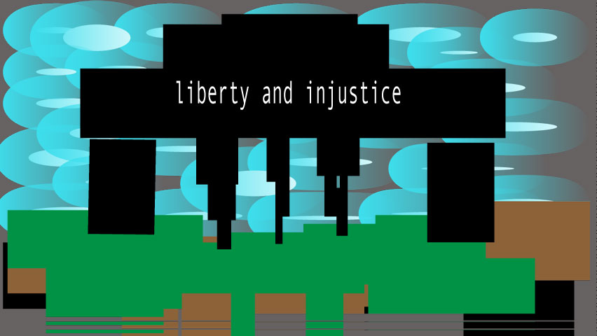

On the site naacp.org it says "Nationwide, African American children represent 32% of children who are arrested, 42% of children who are detained, and 52% of children whose cases are judicially waived to criminal court. Though African Americans and Hispanics make up approximately 32% of the US population, they comprised 56% of all incarcerated people in 2015.If African Americans and Hispanics were incarcerated at the same rates as whites, prison and jail populations would decline by almost 40%. African Americans and whites use drugs at similar rates, but the imprisonment rate of African Americans for drug charges is almost 6 times that of whites.African Americans represent 12.5% of illicit drug users, but 29% of those arrested for drug offenses and 33% of those incarcerated in state facilities for drug offenses."
By Eddie Colon, 2017
The picture i made is how i feel when it comes to the U.S court system dark Ominous unfair injust building of law.